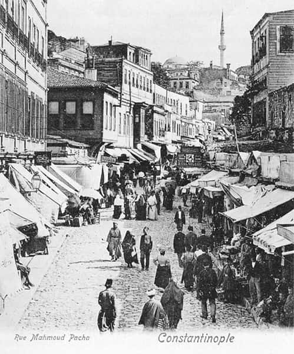

Anonim halk edebiyatı ürünlerinden olan menkıbeler, Osmanlı toplum hayatında yönetici elit ve halk arasındaki ilişkileri aydınlatmak bakımından ilginçtir. Bu metinler içinde Mahmud Paşa üzerine düzenlenenlerin özel bir yeri vardır. Fatih devri vezîr-i âzamlarından olup 1474’te idam ettirilen Mahmud Paşa, birçok halk hikâyelerinde efsanevî bir şahsiyet olmuş, anlatıcıların muhayyilesine göre değiştirilen bir tarihî fona dayandırılan abartmalarla yüceltilmiştir. Elde, bilinen birkaç çeşit Mahmud Paşa menâkıbnâmesi vardır.(*6) Biz, bunlardan Viyana National Bibliothek elyazmaları bölümü, Doğu yazmalarında bulunan iki yazma nüshadan yararlandık. Metinlerin her ikisi de birbirinin hemen hemen aynı olup bunlardan biri esas alınmıştır. Bunun hakkında açıklama biraz ileride verilecektir.

Adı geçen menâkıbnâmenin kahramanı Mahmud Paşa, bugün kendi vakfı
olan bir cami, hamam ve ismini taşıyan çarşı ile tanınmaktadır.
Fatih devrinin dikkate değer kişiliklerinden Mahmud Paşa’nın idamı olayı, çeşitli gruplar arasında tepkiyle karşılanmış ve paşayı yücelten, dolayısıyla siyasal iktidarı üstü kapalı bir biçimde yeren menkıbeler ortaya çıkmıştır. Menâkıbnâmelerde öz bakımından zaman zaman değişiklikler görülmekte, muhayyile zenginliği tarihî olayları zaman ve mekân sınırları tanımadan değiştirmektedir. Nitekim Prof. İnalcık, AÜDTCF kitaplığındaki yazma Mahmud Paşa menâkıbnâmesinin 17. asra ait olduğunu ve bu yüzden Mahmud Paşa’nın yaptığı işler arasında; gerçekte 1625’te vukua gelen Boğaz’da Yeniköy’e yapılan Kazakların baskınını önlediğinin de nakledildiğini bildirmektedir.[59] Gerek Prof. İnalcık’ın sözünü ettiği menâkıbnâmede gerekse bizim incelediğimiz nüshada, devirle ilgisi olmayan bambaşka olaylar da Mahmud Paşa’nın yüceltilen kişiliği etrafında nakledilmektedir. Diğer yandan Prof. İnalcık’ın elindeki bu “Gazavat-ı Sultan Murad” nüshasına ekli Mahmud Paşa Menâkıbnâmesi’nde ise [ki yazar Kanunî devrine ait olduğunu tesbit etmektedir] Fatih devriyle ilgisi olmayan bir sıra olayın yer aldığı görülmektedir.[60] Örneğin: Olaylardan biri Edirne civarında Mustafa Paşa Köprüsü üzerinde geçmektedir. Oysa mezkûr köprü Kanunî devrinde yapılmıştır (aynı motif bizim elimizdeki nüshada da vardır). İncelememizde temel tuttuğumuz her iki nüshanın da baş taraflarında Mahmud Paşa Menâkıbnâmesi, bunu takiben Kanije müdafii (Tiryaki) Hasan Paşa’nın hayatı ve cenklerine ait olaylar nakledilmektedir. Daha ziyade bir sefer günlüğü havasında kaleme alınan Hasan Paşa hakkındaki ikinci kısım incelenmemiştir. Bizim konumuz mecmualardaki Mahmud Paşa menâkıbnâmeleridir. Yazmaların birincisi mezkûr koleksiyonda A F 234 (133) kod numarası altında kayıtlıdır. Flügel Kataloğu’nda II. ciltte 1035 no ile kaydedilen bu yazma ikincisinden, gerek kaligrafi gerekse imlâ bakımından daha kötüdür.[61]
Flügel Kataloğu’nda II. ciltte 1036 no’da tanımı yapılan ikinci nüshanın imlâsı ve kaligrafisi daha muntazamdır. Bu yazmada “Menâkıb-ı Mahmud Paşa-i Veli” baştan 1v-22r arasında yer almakta olup, 22v-86r arası ise aynı şekilde Hasan Paşa ile ilgili olaylara ayrılmıştır. Bu yazma 87 yapraktır. Kâğıdın cinsi sarı renkli octav olup, nesih yazı ile sahifede ortalama 21 satır yer almaktadır. Arapça deyimler ve bazı isimler kırmızı mürekkeple yazılmıştır.[62] İkinci menkıbe olan Hasan Paşa menkıbesi, Mahmud Paşa menkıbesine nazaran daha az menkıbevî bir nitelik taşımaktadır. Gene Hasan Paşa menkıbesinin girişi uzun olup Allah’ın dünyayı yaradışından bahsedilmekte ve uzun bir salutatio kısmı yer almaktadır. Oysa Mahmud Paşa Menâkıbnâmesi’nin gerek menkıbe niteliğinin güçlülüğü ve gerekse sade dilinden dolayı kahvelerde anlatılan bir halk hikâyesi olduğu anlaşılmaktadır. Nitekim gerek Hammer gerekse Flügel yazma için (Cafehauserzählung) kahvehane hikâyesi deyimini kullanıyorlar.[63] Kuşkusuz, bu tip metinlerin medrese eğitiminin ilk basamağında talebe tarafından istinsah edildiğini de belirtmek gerekir.
Esasen son devirlere kadar kahvehane toplum hayatının önemli bir merkezidir. Burada kamuoyunu oluşturan araçlar arasında dedikodu kadar,(*7) meddah hikâyeleri, kıssahanların anlattıkları menkıbeler, halk şairlerinin destanları, şüphesiz ki toplumsal hayatın yazılı belgeler dışında kalan yönlerini, çeşitli grupların kanaatlerini anlamak bakımından önemli malzeme teşkil ederler.
Yazmanın Tarihi Hakkında
Metnin Menâkıbnâme-i Mahmud Paşa kısmında bir tarih kaydına rastlanmamakta ise de, Hasan Paşa ile ilgili ikinci menkıbenin dîbâcesinde sene-i 1168/1754 Safer tarihi ve Abdullah Hasib Edirnevî ismi görülmektedir.[64] Ancak bu isim sadece Hasan Paşa ile ilgili olayları mı, yoksa aynı zamanda Mahmud Paşa menkıbesinden mi istinsah edene aittir, bilinmez. Bundan başka incelememiz sırasında fikrine başvurduğumuz Prof. Andreas Tietze, yazmanın medrese talebeleri tarafından da derlenerek istinsah edilen menâkıbnâme mecmualarından biri olabileceğini söylemiştir. Nitekim gerek imlâ hataları, gerek kazıntı ve mürekkep lekeleri ve kâğıdın son derece ekonomik kullanılışı bunu kanıtlamaktadır. Bu durumda eldeki yazma, büyük ihtimalle 1168/1754’te Abdullah Hasib Edirnevî tarafından evvelce istinsah edilen Hasan Paşa menkıbesiyle, bir kahvehane anlatısı olan Mahmud Paşa menâkıbnâmesini birlikte aynı deftere kopya eden bir medrese talebesine veya meraklıya aittir ki, 18. yüzyılın ikinci yarısı tarih olarak verilebilir.
Menâkıbnâmenin öz olarak asıl tarihini tesbit de güçtür. Burada menâkıbnâmenin içindeki bazı ipuçlarıyla birlikte, dil yönünde gösterdiği bazı özellikleri de göz önüne almak gerekmektedir. Menâkıbnâmede, Mahmud Paşa’nın Yedikule Zindanı’na kapatılışını anlatan pasajda; yanına dört ibrikdâr oğlan verildiği, bunlardan birinin sonra onun vakfına mütevelli olduğu,[65] bu mütevellinin doksan beş yaşına kadar yaşayıp yerine geçen oğlunun menkıbeyi babasından dinleyip kaydettiği, yazarın da ondan aldığı söyleniyor. Bu şüphesiz menkıbeyi yazıya geçiren meçhul yazarın hoş bir uydurmasıdır. Menâkıbnâme-i Mahmud Paşa’nın isimsiz yazarı, bu hesapça metni 16. asrın ikinci yarısında yazmış olmalıdır. Ancak dil özellikleri göz önüne alındığında, ilk yazmanın arada birçok müstensihlerin elinden geçtiği, bazı ilâveler ve dil, üslûb değişikliklerine uğradığı açıktır. Bütün bunlar gösteriyor ki, karşımızda anonim nitelikte bir halk edebiyatı ürünü vardır.
Yazmanın Dili
Eserin dili genellikle arkaik Osmanlı anonim tevârîhlerininkini andırıyorsa da, daha geç devirlere ait deyimler göze çarpmaktadır. Örneğin Kadıasker Ali Efendi’den söz edilirken “ihtiyar” sözcüğü kullanılıyor ki,[66] bu sonraki yüzyıllara ait bir deyiştir. Arkaik devirde bu sıfat daima “koca” olarak kullanılırdı. Gene aynı şekilde metinde geçen “tekraren ve yine” gibi yan yana kullanılan synonim yanlışlar sonraki devirlerin bir katkısı olmalıdır.[67] Metinde çokça geçen halk ağzına ait tipik yanlışlara şunlar örnek gösterilebilir: ruhbanlar, ulemâlar, enâmlar, kelimâtlar, ahvâller. Aynı şekilde, avamî galat deyimler göze çarpıyor. Hilâf anlatmak gibi...
Konuşulan Türkçenin, aydın sınıfın yazı dili kadar hızlı bir değişim geçirmediğinin görülebileceği arkaik deyimler bir hayli çoktur. Örnek: Kura salmak (kura çekmek); selâm eytmek (Şimal Türkçesinde eytmak-söylemek); “Âdemîler”; “kabahatin rica etmek”; gene arkaik fiillere örnek olarak, “önüne düşüb olmak”...
Aynı şekilde halk edebiyatında çokça görülen basit simetrik üslûba burada da rastlanmaktadır. Mahmud Paşa’nın idamını anlatan sahnede: “Mahmud Paşa’nın eli bağlu, yüreği dağlu meydana getirdiler” deniyor. Sinonim çiftlere örnek olarak; “hedaye ve pişkeşler hazur idüb, ... Tatarlar yas ve mâtem idüb, ... tekraren ve yine” gibi kullanışlar gösterilebilir. Bu arada bazı galat deyimler de görülmektedir. “Yüzüne güllâb ferman eylemek, tavşan uykusu vermek (oyalamak)” gibi... Gene bazı arkaik çekimlere de rastlanıyor: “Görem, ... alvirim, ... tedarikin görmüşüm (gelecek zaman çekimi)” gibi...
Gerek istinsah hatası, gerek konuşma dilinin sentakstan çok tonlamaya, mimik ve jestlere dayanan anlatım özelliğinden olacak; menâkıbnâmede bozuk cümle kuruluşlarına da rastlanıyor. Örneğin: “Anların ikramına binaen iki eliyle kal’a divarına yapuşub, virmem kal’a kâfirciklerim, bana lâzumdur deyüb...”[68] ifadesi gibi...
Bu anonim edebiyat ürününün bir özelliği de dibâcenin salutatio (dua) bölümünün uzun olmaması, Hasan Paşa menkıbesinin aksine fazla düşünsel ve bilgiççe anlatıma girilmemesi ve her şeyden önce metnin Arapça, Farsça lûgate fazla yer vermemesidir. Bununla beraber günlük dilde kullanılan yabancı deyimlere bolca rastlanıyor ve özellikle yukarıda gösterildiği gibi bu deyimlerin yanlış kullanıldığı görülüyor. Metnin gerçekten aydın olmayan bir dinleyici kitlesine hitap ettiğine en iyi delil; olayların sık tekrarı, tarafgir bir üslûb ve menkıbedeki kişilerin, iyi-kötü şeklinde kesin bir ayrıma tâbi tutulmasıdır. Bu durum, menkıbenin her şeyden önce sözlü edebiyat ürünü olduğunu düşünürsek, dinleyici ve anlatıcı arasında bir dramatik gerilimin doğmasını gerektiren anlatım ve temsil özellikleri bakımından hiç de garip kaçmamaktadır.
Mahmud Paşa
Adı geçen menâkıbnâmenin kahramanı Mahmud Paşa, bugün halen kendi vakfı olan bir cami, hamam ve ismini taşıyan çarşı ile tanınmaktadır. Mahmud Paşa’nın menâkıbnâmelerde yaşayacak kadar, geniş halk grupları üzerinde nüfuz ve etki sağlaması gerçekten tartışılacak ilginç bir konudur. Bu nedenle menkıbe kahramanının hayatı ve gerçek tarihî kişiliği üzerinde kısaca durmak ve menâkıbnâmede nakledilen olaylara değinmekte fayda vardır. Fatih devrinin bu ünlü vezirinin doğum tarihi ve aile kökeni gerek klasik vekayinâmeler ve gerekse modern yazarlar arasında tartışmalı bir konudur. Phrazantzes onun Tryballuslu Sırb bir baba ile Rum bir anneden, Kritovulos ise muteber bir Rum ailesinden geldiğini ileri sürmüşlerdir.[69] Çağdaş tarihçilerden Franz Babinger ise onun Sırb Despotu Angelos hanedanının Teselya kolundan geldiğinin kuvvetle muhtemel olduğunu söyler.[70] Nihayet Halil İnalcık, eldeki menâkıbnâme metinlerini de göz önüne alarak bir başka ihtimali zikrediyor ki, bu da Mahmud’un babasının Manastır papazı Pop Kasab olduğudur.[71] Mahmud’un Edirne Sarayı’na ne şekilde getirildiğine dair rivayetler de muhteliftir. Muhtemelen Mehmed Ağa nâm bir emir, Mahmud’u annesiyle birlikte Semendire yolunda Novo-Brodo mevkiinde esir edip Sultan II. Murad’a takdim etmiştir.[72]
İşte bütün bu safhaların vekayinâmelerde de karanlık kalması, kesin bir bilgi görülmemesi; menâkıbnâmelerde rastlanan ve zengin muhayyileye dayanan anlatımın nedenidir; incelemenin sonunda, menâkıbnâmenin bu safhayı anlatan kısımları ek olarak verilmiştir ve çok ilginç muhayyel bir fon oluşturulduğu görülmektedir.
Bir müddet Edirne Sarayı’nda eğitim gören Mahmud; II. Mehmed’in cülûsundan sonra (855/1451) yeni padişah tarafından ocak ağalığına tayin olundu. Bu safhaya kadar Mahmud’un siyasî kariyeri üzerine menâkıbnâmelerde rastlanan abartmalar gayet ilginçtir. İstanbul muhasarası sırasında, “sur”un Edirnekapı ve Yedikule kesimi arasında Anadolu Beylerbeyi İshak Paşa’nın maiyyetinde bulundu. Bazı tezkirelerin Mahmud Paşa’nın hem vezir hem beylerbeyi olarak muhasaraya iştirakini iddia etmeleri Ş. Tekindağ’a göre de asılsızdır.[73] Gerçekten bu konuda menâkıbnâmelerin de Mahmud Paşa’nın muhasaradaki rolünü abartmaları ve ona beylerbeyilik, vezîr-i âzamlık, kaptanpaşalık gibi pâyeleri vermeleri gerçek dışı yakıştırmaların hayli yaygın bir nitelikte olduğunu gösteriyor.
Sırb Kraliçesi Helena, Katolik bir Bosnalıyı nüfuzlu bir mevkie getirince Sırb Boyarları isyan ederek II. Mehmed’den yardım istediler. Padişah bu işle Mahmud Paşa’yı görevlendirdi. Mahmud Paşa kendi parasıyla techiz ettiği Rumeli askerine, Anadolu askerini ve Fatih’in verdiği 1000 yeniçeriyi de kattı.[74] Ancak Sırb zâdegânı, padişahın bizzat gelmesini, aksi takdirde Macar kralına başvuracaklarını bildirerek Mahmud Paşa’yı reddettiler. Bu çekişmeli durum, askerin de isyanına sebep oldu. Mahmud Paşa ise askeri türlü vaatle ve para ile yola getirdi ve ilerleyerek Resova ve Kuruca gibi mühim kaleleri fethetti. Elimizdeki menâkıbnâmede bu olay Sultan Murad’ın ölümünden sonra Tatarların hücum etmesi ve Mahmud’un kendi parasıyla Rumeli’de at uşağı ve bekâr oğlanlarından bir ordu kurması şeklinde muhayyel bir nakle konu olmuştur. Bu fitne-i Tatar bahsi, Prof. İnalcık’ın elindeki menâkıbnâmede bulunmamakla beraber, diğer menâkıbnâmelerde umumiyetle vardır.[75]
Mahmud Paşa askerî kariyeri bakımından; Fatih’in Karadeniz’deki Sinop, Amasra ve Trabzon fütûhâtında önemli rolü olan kumandanlardandır. Keza, 1460’ta Mora’da Mistra Kalesi’ni, despotu ikna ederek ele geçirmiş ve kendisini hanedanı ile birlikte II. Mehmed’in nezdine göndermiştir. Menâkıbnâmede nakledilen Gedik Ahmed Paşa ile birlikte Çatalca Hisarı’nı denizden zapt etmesi ve içinde korsanlık yapan kâfirleri te’dib etmesi olayı, muhtemelen anlatıcı ve dinleyicilerin Mahmud Paşa’nın bu deniz seferlerini kendi dünyalarına göre biçimlendirmelerinden başka bir şey olmasa gerektir.
Mahmud Paşa, 1468’de Karaman beyi Pir Mehmed’in takibine memur edildi, fakat yakalayamadı. Bu olay Mahmud Paşa’nın gözden düşmesine sebep olmuştur ki, aleyhine padişahı kışkırtanların Şehzâde Mustafa ve Rum Mehmed Paşa olduğu nakledilir. Gerçekten Âşıkpaşazâde dahi Rum Mehmed Paşa’yı bu yüzden kâfir ve müfsid olarak nitelendirir ve sonunda, “padişahın anı it gibi boğdurduğunu” nakleder. Müteakiben Karaman ili merkezindeki amele ve zenaatkârların İstanbul’a nakli işine nezaret eden Mahmud Paşa, burada adil muamelesiyle halkın sevgisini kazanmış olmalıdır. Ancak “Karamanlı’dan akça alıp, adam kayırdığı” dedikodularıyla bu vazifeden de affedilmesine sebep oldular. Rum Mehmed Paşa’ya verilen bu vazife bu sefer sert, adaletsiz uygulamalara ve şikâyetlere yol açtı. Olay, mağdur kitlelerin indinde Mahmud’un itibarını artırmış olmalıdır.
Akkoyunlu Emiri Uzun Hasan’ın Orta Anadolu’da ilerlediği sıralarda Mahmud Paşa yeniden vezîr-i âzam oldu. Otlukbeli Savaşı’ndaki başarılı stratejisine rağmen muârızları onu II. Mehmed’in gözünden düşürdüler ve tekrar azledildi. Bundan sonra Hasköy’e çekilen Mahmud Paşa, Şehzâde Mustafa’nın ölümünden sonra İstanbul’a gelip padişahın huzuruna çıktı.(*8) Aralarındaki husumet dolayısıyla, Şehzâde Mustafa’nın ölümüne karşı kayıtsız kalan Mahmud’u, Fatih çok soğuk karşıladı ve Yedikule Zindanı’na hapsettirdi (879/1474). Bir müddet sonra da idam ettirdi. Esasen Otlukbeli Savaşı, paşanın siyasî kariyerinin sonu olmuş ve hükümdarla arası adamakıllı açılmıştı. Eldeki menâkıbnâmelerde Mahmud Paşa’nın idamına sebep olan olayların çok değişik, ayrı bir anlatıma konu olması gerçekten ilginçtir. Muhakkak olan bir şey varsa, o da paşanın idamının gerek halk gerekse birçok müellifler arasında hoşnutsuzlukla karşılandığıdır. Paşanın halk ve ulemâ tarafından tutulmasına bir sebep olarak, o sıralarda güçlenmekte olan Hurûfîleri te’dib etmesi, yaktırması ve padişahın Hurûfîliğe karşı olan alâkasını önlemesini gösteren yazarlar vardır.[76] Gerçekten bu yeni türeyen nüfuz grubuna karşı mevcut grupların statü ve dengesini koruması hoşnutluk yaratmış olmalıdır. Mahmud Paşa’nın annesi dolayısıyla Ortodoks cemaatinin ileri gelenleri ile de ilişki kurduğu söylenir. Gene muhakkak olan Adnî mahlasıyla şiir yazdığı ulemâ ve şuarâ muhitlerinde koruyucu bir rol oynadığıdır. İşte Mahmud Paşa’nın kişilik olarak çeşitli gruplar ve sınıflar arasındaki bu dengeci tutumu, onun nüfuzunun artmasını sağlamışsa da, tabiatıyla radikal teşebbüsleriyle tanınan II. Mehmed gibi bir monarkla çatışmaya götürecekti. Fatih devri, şüphesiz Osmanlı tarihinde kayda değer değişikliklerin görüldüğü bir dönemdir. Fatih’in ıslâhat hareketleri, Osmanlı toplum ve devlet hayatının ana unsurlarına; merkez ve eyâlet teşkilâtına, toprak düzenine, malî bünyeye, kültürel ve ilmî müesseselere kadar girmiş, bu da şüphesiz ki eski nizam içinde çıkarı olan geniş grupları rahatsız etmiştir. Radikal değişiklikler getiren monarklar, aslında geniş kitleleri daima rahatsız edegelmişlerdir. Eğitim kurumlarının yeniden kuruluşu, zâviye topraklarının mirî sisteme entegrasyonu; orduda, maliyede, kançılaryada teşkilâtın düzenlenip genişletilmesi, yeni vergi mevzuatı ve sistem ayarlamaları, diğer taraftan fethedilen ülkelere sürgün metoduyla bazı ahalinin gönderilme işlemi, ilmiyyeden, idareci gruplardan, tarikat mensuplarından ve hatta üretici halktan geniş kitleleri memnuniyetsizliğe sevk etmiş olmalıdır. İşte böyle bir ortamda bazı statükocu yöneticilerin monarkla çatışmaları ve bu yolda iktidar ve hayatlarını kaybetmeleri halinde, bu gayrimemnun gruplarca efsaneleştirilmeleri sadece Osmanlı toplumuna has bir olay değildir. 17. asır Rusya’sında Çar Aleksei Mihailoviç Romanov ve Patrik Nikon’un merkeziyetçi devlet ve ona entegre bir kilise kurmaya yönelik reform çabaları, her sınıftan çeşitli gruplarca tepkiyle karşılanmış ve Boyarina Morozova gibi mürteci asilzâdeler azizleştirilmişti. Bunu her toplumun çeşitli evrelerinde benzer örneklerle görmek mümkündür.
II. Mehmed’in icraatı karşısında tutumunu kesinlikle bilemememize rağmen, mümkündür ki, Mahmud Paşa ünlü monarkın karşısında halk kitlelerinin tutuculuğuna hitap eden bir tavır ve politikanın güdücüsü olmuştur. Bu takdirde anonim halk eserleri bu kişileri yönetici elitten ayırır ve efsaneleştirir.
Tıpkı ilk anonim tevârîhler gibi avamî tarikatler ve dinsel liderleri yücelten Mahmud Paşa menâkıbnâmesindeki, Eşrefzâde bu tür bir şahsiyettir. Mahmud’un karşısındaki yöneticiler ise onun da düşmanıdır ve ondan “torlak” diye bahsederler. Mahmud Paşa’yı yücelten, onun otoritesini meşrulaştıran motifler adeta bir siyasal formüldür. Hızır’ın onu kurtarması, rüyasında İslâm’a geçmesi ve hidayete ermesi gibi kerametler onu adeta bir karizmatik otorite olarak tanımlamamızı gerektirse de; aslında bütün bu motifler belirli grupların onun etrafında bir myth yaratma gayretini gösterir. Menkıbedeki olaylar ve menkıbenin zaman içindeki biçimlenişi göz önüne alındığında bu tür olayları karizmatik otorite gibi muğlâk bir kavrama başvurarak açıklamanın imkânsızlığı görülür. Mahmud Paşa’nın kişiliği, birtakım menkıbevî motiflerle yüceleştirilmek, iktidarı övülmek ve haksız idamı tel’in edilmek isteniyor. Hiç yanılmayan, olağanüstü akıllı ve bilgili, meslek çizgisindeki başarısı birtakım mistik olaylara bağlı, adeta misyon sahibi bir yönetici olarak ortaya konmaktadır. Keza, menkıbenin onun uhdesine birçok vazifeyi vermesi de, güçlü yönetici imajını yaratıyor. Geleneksel toplumda otoritenin belirgin bir niteliği de bu olsa gerektir.
Bu menâkıbnâme metinlerinde, Mahmud Paşa her bakımdan saltanat mevkiindeki kişiye üstün tutulmaktadır. Gerek II. Murad gerekse II. Mehmed zayıf iradeli, kolay tesir altında kalan şahsiyetler olarak canlandırılmaktadır. Onların her başarısında Mahmud’un büyük rolü vardır. İstanbul muhasarasındaki rolü muhayyel olaylarla abartıldığı gibi, Tatarların fesadını yok etmek de sadece ona ait bir başarıdır. Prof. İnalcık’ın elindeki menâkıbnâmede bu fitne-i Tatar bahsi bulunmamakla beraber, muhayyel olayın diğer menâkıbnâme metinlerinde yer aldığını söylemiştik. Her iki padişah da Mahmud’un idamını emrederler fakat pişman olmakta gecikmezler. Mahmud’un II. Mehmed’e ve II. Murad’a olan üstünlüğü muhtelif pasajlarda birtakım statü sembolleriyle belirtilir. Örneğin muhasaradan sonra Mahmud Paşa’nın attığı okun, Dumanlı Kilise denen ve Ayasofya’dan daha büyük bir kiliseye düşmesi gibi... Keza Mahmud sarayda büyük bir itibarla ağırlanır. Osmanlı devlet teşkilâtının kuralları ve devşirme usulüyle bağdaşır yanı olmayan olayların sırf onun kişiliğini yüceltme gayesiyle uydurulup, menkıbeyi zenginleştirdiği görülüyor. İlginç bir nokta da, Sultan Murad’a İslâmbol Padişahı, ... Gazi Sultan Murad Han gibi unvanlar verilmesine karşın, II. Mehmed için, kendi devrinde dahi kullanılan Ebü’l-feth unvanının kullanılmamasıdır. Bu kayda değer bir tutumdur.
Doğu menkıbelerinde bir kimsenin ilmî üstünlüğünü belirtmek için çokça başvurulan motife burada da rastlanıyor. Halk arasında bu üstünlüğün vurgulanması adeta bir güreş veya spor müsabakası biçimindeki bir olaya bağlanarak belirtilir. Bilgin ve fazıl menkıbe kahramanı, devrinin bütün yüksek bilginlerinin bulunduğu bir mecliste, fikir ve çözümleriyle onları susturmak, ileri sürdükleri problemleri çözüp pes dedirtmek suretiyle derhal orada büyük bilgin vasfını kazanır. Özellikle Şiî menkıbelerinde görülen, İmam Ebu Musa Kâzım’ın Bağdat ulemâsını bir toplantıda susturması gibi aynı şekilde Abdülkadir Geylanî ve diğer din uluları için nakledilen rivayetlerde de benzer motiflere rastlıyoruz. Menâkıbnâmemizde, Mahmud’un biri manastırda rahiplerin, diğeri Edirne Sarayı’nda devrin seçkin ulemâsının önünde olmak üzere iki imtihandan geçtiğini görüyoruz. Menâkıbnâmenin içindeki muhayyel olaylar muhakkak ki halk arasında uzun zaman yaşamış, sözlü kültürün bu unsurları geniş kitlenin tarih, toplum ve devlet yönetimi hakkındaki görüşlerini yansıtmıştır. Mahmud Paşa menâkıbnâmeleri, geç devrin resmî tarih yazıcılığından nitelikçe çok farklı ve arkaik bir görünümde ise de, 15. yüzyıla kadarki anonim tevârîhlerle olan benzerliğine değinilmişti.[77] Bu menâkıbnâmede görülen, Hızır’ın Mahmud’a yardım etmesi, halk kitlelerince benimsenen tarikat liderleri tipini temsil eden Eşrefzâde’nin gösterdiği kerametler, İstanbul kuşatması esnasında Cebe Ali hakkında anlatılan efsanevî olaylar (ki menkıbe-i Cebe Ali-Cibali semtinin ismine atfen halk arasında anlatılagelmiştir), Şerife Hatun’un bedduasıyla Mahmud Paşa’nın idamı arasında yakın bir ilgi kurulması, Mahmud Paşa Camii’nin inşaasına ait menkıbevî olaylar çokça rastlanan tipik motiflerdir.
Klasik tarih yazıcılığı başlangıçta bu tür motiflerden uzak bir yapıda değildir. Menkıbeler bu yüzden arkaik tarihçiliğin niteliksel çekirdeğini teşkil eden unsurları göstermek bakımından da ilginçtirler. Bu özellik sırf Osmanlı historiographie’sinin başlangıç devirlerine has değildir. Anna Komnena gibi zirvedeki temsilcisiyle Bizans tarihçiliği, vakanüvîs Nestor’un şahsında Kiev Rusyası ve daha geç devirlerin Rus historiographie’si de zengin muhayyel olaylara, mistik motiflere dayanırlar. 15. yüzyıl Osmanlı müverrihi Âşıkpaşazâde; Osmanlıların Rumeli’ye geçişini menkıbevî bir tarzda anlatır. Hatta 16. yüzyılın ünlü Macar tarihçisi Istvan Brodariç bu yönden daha da ilginçtir. Brodariç, Buda’nın Türklerce fethi olayını, Kanunî Süleyman’ın bir hacı kılığında şehre girip, şehrin kapılarını dışarıda bekleyen ordularına açmasıyla izah etmektedir. Son birkaç asra kadar tarih yazıcılığı bu tür menkıbelerin tesiri altında kalagelmiştir.
Kısaca özetleyecek olursak, menâkıbnâmeler gerek halk kitlelerinin dünya görüşü ve yöneticilere karşı olan tutumu açısından, gerek tarih yazıcılığının başlangıcındaki atmosferi ve gelişimini saptamaktaki yararı bakımından bilinmesi ve incelenmesi gereken türdeki yapıtlardır.
Menkıbenin Konusu(*9)
Sultan II. Murad devrinde eyâletlere gizlice teftiş için adamlar gönderilir, o memleket reâyâsının durumu, idarecilerin suiistimali olup olmadığı tetkik ettirilirmiş. Gene bir gün Rumeli’ye gönderilen böyle biri, Manastır kasabasına gelir. Kasabada bahar mevsimi dolayısıyla ruhban toplanıp aralarında zor meseleleri tartışmakta ve en güç meseleyi halleden menkıbenin diliyle ulu ruhban seçilmektedir. O yılki problemi uzun boylu bir genç çözer ve rahipler onu selâmlar, hürmetle kendilerine baş seçerler. Sultan Murad’ın adamı Edirne’ye dönerek bu gördüğü olayı ve genci padişaha anlatır. Padişah merak eder ve Edirne Sarayı’na getirilmesi için ferman verir. (!) Manastır’a gelen adamlara Mahmud’un babası emre itaat ettiğini, ancak oğlunun artık kendine ait olmadığını, rahiplere başvurarak onlardan istemelerini söyler. Rahipler, Mahmud’u Sultan Murad’ın adamlarına teslim edip etmemek konusunda anlaşamazlar. İçlerinden biri genç Mahmud’un çağrılmasını ve durumun kendisine anlatılıp, seçim yaptırılmasını teklif eder. Mahmud geldiğinde durumu anlatırlar. Meğer Mahmud’a bir müddetten beri rüyasında Müslüman olacağı ve İslâmbol(*10) padişahı Sultan Murad hazretlerine vâsıl olacağı söylenmişmiş. O da o vakitten beri, bu haber ne zaman gerçekleşecek diye bekleyip düşünürmüş. Derhal Müslüman olup rahiplerden izin ister. Fakat keşişler gene de verip vermemek konusunda çatışmaya düşerler. Nihayet kura çekmeye karar verirler. İnatla üç defa kura çektikleri halde, üçünde de kura “verilsin” diyenlere isabet eder ve delikanlıyı padişahın adamlarına verirler. Padişahın adamları ismini hemen Mahmud koyarlar. O dahi rüyasında isminin Mahmud olacağını görmüşmüş. Kasabada ne kadar rahip ve kocabaşı varsa onu uğurlayıp şehrin dışına çıkarmışlar. Ve ayrıldıkları noktaya kocaman bir mermer direk dikip, adını Ayrılık Direği koymuşlar.(*11) Mahmud da Edirne’ye gelip Sultan Murad’ın huzuruna çıkmış. Padişah gencin hatt-ı hareketini beğenmiş ve ona Molla Güranî’yi hoca tayin ederek, “Bu gencin ilmi derindir, sen de benim ricamla Kur’an öğret” demiş. Delikanlıya oda tahsis edilmiş ve öyle ilim tahsil etmiş ki, o kadar olur. Hocanın durumu padişaha bildirmesiyle, padişah bütün bilginleri çağırıp, onu imtihan etmelerini ister, imtihan günü büyük ziyafetler verilir. Kadıasker Ali Efendi (?) ve diğerleri Mahmud’un çok bilgin biri olduğunu tasdik edip, padişaha bildirir. Padişah çok sevinir ve onu vezîr-i âzam yaparak, vezîr-i âzamı da ikinci vezir yapar. Mahmud Paşa üç yıl kadar adalet üzere vezirlik yapar. Fakat kader bu; diğer vezirler kıskanıp onun hakkında şikâyette bulunurlar. Padişah nihayet kuşkulanır ve boynunun vurulmasını emreder. Mahmud Paşa’yı eli bağlı yüreği dağlı meydana getirirler. Oradaki ihtiyarlar, temiz kimseler, âlimler, zenginler, fakirler feryad u figân etmektedirler. Padişaha affı için yalvarırlar, fakat o reddeder. Cellâd ipi üzerine atarken Mahmud Paşa, “Yarab mahfî işler sana malûmdur” diye yakarınca, birdenbire nâbedîd olur. Halk velveleye düşüp, “Aferin Mahmud Paşa kerametlû, kendini cellâd elinden halâs eyledi” derler.
O hafta cuma günü Mustafa Paşa Köprüsü’nde bir koca, şehr-i Edirne’ye giderken şehre yakın bir yerde iki kişi oturuyormuş. Bunlardan biri nur yüzlü bir ihtiyar, diğeri güzel yüzlü bir genç adammış. Pir o ihtiyar köylüyü çağırmış ve kendisinin Hızır aleyhisselâm, gencin de iftiraya uğrayan vezir Mahmud Paşa olduğunu, Tanrı’nın emriyle onu cellâd elinden kurtardığını söylemiş. “Sen şimdi şehrin beyine git, filân yerde vezirin Mahmud’u gördüm diye söyle” demiş. “Bir kılına zarar getirmesin, kendi çok zarar görür” demiş. “O ihtiyar da acele ile şehre gidip durumu padişaha anlatır. Padişah sevincinden bayılır, ayıldığında vezirlerini Mahmud’u aramaya gönderir. Fakat arayanlar onu bulamazlar. Ertesi gün sarayda Divân toplandığında, Mahmud Paşa birden zâhir olur. Padişah ona yüz bin akçe bağışlayıp, gene vezîr-i âzam yapar. Fakat kendisi üç ay sonra ölür. Yerine oğlu Mehemmed Han cülûs eyler. Kırk gün yas tutarlarken, Kırım Tatarları Sultan Murad’ın vefatı haberini alıp, Edirne’ye yağmaya gelirler.” Gelenler kırk bin kişidirler. Edirne etrafına konup, “Şimden sonra saltanat bizimdir” derler. Sultan Mehemmed, Mahmud Paşa’yı yanına çağırıp akıl danışır. O da, “Sizin âli himmetiniz berekâtiyle anların tedarikin görmüşüm” diye cevap verir. Mahmud Paşa Tatarların belli başlı adamlarına kaftanlar hazırlatıp üzerine zehir bulaştırır ve daha çokça hediyeler hazırlatıp Tatarlara götürür. “Şimden sonra saltanat sizindir, yalnız on beş yirmi gün mühlet isteriz, zira manimiz var, yabandan gelecek adamlarımız var, onlara haber verelüm gelsünler, eşya ve adamlarımızı alıp gidelim” der. Tatarlar bunun üzerine bir ay müddet verirler. Paşa da onlara zehirli kaftan giydirir ve tavşan uykusu verir.(*12) Menkıbe devamla: “Ol zaman/kul yok idi. Dört bölük sipahi vardı. Sekban ocağı var idi. Bir de kapı ağalarının kendi tevâbiî var idi. Andan sonra Mahmud Paşa Edirne’de ne kadar bekâr tâifesi ve at uşağı var ise, on bin mikdarı adam yazub, cümlesine istimâlet virüb, cebe ve çuşen ve silâhlar üleştirüb, bu yurdu ki; imdi varın 17 güne değin sabr idün, eğer hüda-i müteal nusret virirse ben dahi size padişahtan ihsanlar bahşişler alivirim” diye anlaştı. Böylece 16. gün Tatar beyleri zehirlenip ölür ve Tatarlar perişan olur. Mahmud Paşa’nın hazırladığı ordu da bunları dağıtır yok eder. Ondan sonra Mahmud Paşa sözünden dönmeyerek onlara mülkler verip, menâkıbnâmenin deyimiyle “bu saltanatı Allah-u Teâlanın avniyle ve Resûl-i aleyhisselâmın mübaharetiyle Tatar taifesinin ellerinden halâs eyledi”. Mahmud Paşa bundan sonra Sultan Mehemmed’e Konstantiniye’nin alınması gerektiğini söyler. Padişah razı olur ve asker toplanır. Ordu Gelibolu’ya, oradan da Bursa’ya geçer. Sonra İznik’e geçilip üç ay kalınır. Orada Eşrefzâde diye bir aziz vardır. Onu ziyaret edip duasını alıp, Konstantiniye’ye hareket edilir. Konstantiniye beyine bir adam göndererek Sultan Mehemmed Han’ın oraya av ve gezinti için geldiğini söylerler. Mahmud Paşa karşı sahilde bir kale gerektiğini söyleyerek Rumeli Hisarı’nın yapımı için padişahı razı eder. Mahmud Paşa rüyasında Hızır aleyhisselâmı görür, Hızır ona eliyle bir sığır gösterir. Uyandığında bir sığır derisi istetir ve bunu Konstantiniye beyine göndererek ondan, Sultan Mehemmed Han için bir sığır derisi kadar yer istetirler. Burada padişaha gölgelik bir yer yapılacağı söylenir. Bey izin verince, deriyi dilimlere ayırır, çevirdiği yer kadar bir alana bugünkü Rumeli Hisarı’nı yaparlar.
Konstantiniye beyi durumu öğrenince telâşa kapılır, ama son pişmanlık fayda vermez. Böylece Konstantiniye beyine Karadeniz’den gelen zahirenin yolu kesilir. Bir gün Mahmud Paşa 10.000 kadar askerle bir serdâr tayin edip Galata Kalesi’ni fethettirdi. Kılıç artığı kâfirler de cizye ve haracı kabul ettiler. Bir gün Mahmud Paşa padişaha “Rahiplerden öyle işittim ki, Konstantiniye’nin fethi, İslâm askerlerine gemilerini karadan yürütmeyince müyesser olmaz” der. Bunun üzerine Gedik Ahmed Paşa ile o gece Ok Meydanı’nda, karadan denize kadırga indirmişler, fetih müyesser olmamış. Lakin eski Vezîr-i âzam İbrahim Paşa (!) ve adamları padişahı kışkırtır ve “O daha gâvur, putu çıkmadı” derler. Padişah kızıp Mahmud Paşa’nın çadırına gider. Ama önce Eşrefzâde’ye sorayım der. Eşrefzâde padişaha Mahmud’u katlettirmemesini söyler. Mahmud Paşa bu olayı duyunca üzülür ve Eşrefzâde’ye yalvarır. O da, “Üzülme, kalenin fethi bu vakte kalmazdı, lâkin Cebe Ali sarılır vermem der” diye teselli eder. Bu Cebe Ali’yi kâfirler hoş tutup beslerlermiş.(*13) Padişah Mahmud’u öldürmekten vazgeçip dönünce, diğer vezirler derhal; “Ama padişahım o Eşrefzâde torlağının sözüne bakılır mı, ikisi birden hıyanet eder. Galata kâfirleriyle meşveretleri varmış” derler. Padişah bunun üzerine tekrar çadıra dönünce, Eşrefzâde’nin yalnız başına ağlayıp dua ettiğini duyar. Eşrefzâde “Ya benim canımı al, ya da şu Cebe Ali’yi öldür” diye dua etmektedir. Padişah bunun üzerine Eşrefzâde’yi ve Mahmud’u katletmekten vazgeçer ve o gece yarısı da Cebe Ali ölür. Bu sayede fetih müyesser olur. Kâfir askerleri kaçarlar. Şehre girilirken Yahudiler Kapusu denen yerde Sultan Mehemmed Han ve Mahmud Paşa birer ok atarlar. Sultan Mehemmed’in attığı ok Ayasofya’ya, Mahmud Paşa’nınki ise Dumanlı Kilise(*14) denen yere düşer. Bu Dumanlı Kilise daha büyükmüş ve bütün rahipler orda toplanırlarmış.
Padişah, Mahmud’a “Sen deryaya kapdan ol, karadan gemi yürüttün” der. O da etek öpüp Gedik Ahmed Paşa’yı kaymakam tayin eder. Denizden Çatalca Hisarı’nı kuşatmaya giderler. Bu Çatalca Hisarı’ndan İstanbul’u yağmalamak için çokça kâfir gelmektedir. Sonra Kadıasker Ali Efendi hacca gitmek için padişahtan izin istemiş ve yerine Mahmud Paşa’yı tavsiye etmiş. Ali Efendi hacda ölünce Mahmud Paşa kadıasker olarak kalmış. Böylece dört vazifeyi birden hakkıyla yerine getirdiği gibi (vezîr-i âzam, beylerbeyi, kaptan-ı derya, kadıasker) arada bir padişahla kırklar halvetine bile girermiş. Mahmud Paşa, padişahtan izin isteyip Dumanlı Kilise’yi yıktırır ve yerine cami yaptırmak için işe girişir. Caminin temelini kazarlarken, kocaman, altın dolu bir küp çıkar. Padişah bunu ona hediye edince hepsini sikke yapıp usta ve amelelere verir. Böylece cami bedavaya çıkar. Fakat caminin yapımında hiçbir zorlama olmamış. Ustalar ve ameleler kendi iradeleriyle rahat çalışsınlar denmiş, hatta malzeme taşıyan öküzler bile güdülmeden ot yiyerek camiye malzeme taşırlarmış. Böylece cami yedi yılda tamamlanmış. Altınların bir kısmını da Medine fıkarasına vakfetmiş. Zira rüyasında peygamberi görmüşmüş.
Bu arada İbrahim Paşa’nın karısı ölmüş. Padişah ona bir cariye vermişmiş. Mahmud Paşa’ya bir mühürdar oğlan verilmiş. Mahmud Paşa’yı kıskanan Vezir İbrahim Paşa ise, o oğlana haber gönderip, “Bir beyaz kâğıda mühür kazıp bana gönder, seni ihya ederim” der. Oğlan tamah edip denileni yapar. İbrahim Paşa da kâğıda düzmece bir mektub yazıp, padişaha götürüp ve nifakâne ağlayarak mektubu gösterir. Kâğıtta İbrahim Paşa’nın cariyesine hitaben şöyle yazıyormuş: “Sen bir makbule olsan, seni böyle bir mühmel kocaya vireler, şikâr olasın insaf mıdır ve sencileyin bir mâh-ı peyker öyle âdeme sayd olmak lâyık değildir, imdi hemen niylersen eyle, o nabekâr kocayı (ihtiyar) helâk eyle. Badehu ben seni tezvic ederim. Zira sencileyin makbule bana lâyıkdır.” Padişah bunun üzerine gazaba gelir ve Mahmud Paşa’yı Yedikule’ye hapsederler. Menkıbe burada, “Hizmetine dört ibrikdâr oğlan tayin ettiler. Amma ash-ı rivâyette bir ibrik oğlanı tayin olundu, anın lisanından menkûldür, hatta ol oğlan bade’z-zaman Mahmud Paşa evkafının üzerine mütevelli olmuş idi. Doksan beş yaşında vefat eyledikde oğlu yerine mütevelli olub, bu menâkıbı pederinin lisanından rivâyet eder. Biz dahi yazdık tâkim mü’min karındaşlarımız okudukda bu fakiri bir fâtiha-ı şerife ile mesrur idüb, ihsan ideler” diyor. Burada iken sabaha karşı Mahmud Paşa’nın aklına Eşrefzâde gelir, ona bir mektup yazıp gönderir. Eşrefzâde gelen adama der ki, “Filân mahalle var, anda bir Şerife Hatun vardır. Mahmud’a inkisar etmiş. Ona benden selâm söyle, hayır dua etsin, ola ki gazab-ı padişahî durur.” Bunun üzerine kadını gidip bulan adama, Şerife Hatun der ki: “Bu gece rüyamda peygamberi gördüm. Duan kabul olundu dedi. Benim ona inkisarımın sebebi şudur: Eğriboz seferinde iken azeb tâifesi ile Garb (Ocağı) tâifesi nâmakul bir iş iderler, birkaçına siyaset emrolunur. İçlerinde oğlum da vardır. Bu yüzden beddua ettim. Padişah gazabına uğrasın, olsun dedim. Gerçi bu işi Mahmud Paşa nizâm-ı âlem için etmişdür. Lakin inkisar etmiş oldum. Ta ki ol zamandan beri on dört yıldır duam şimdi kabul olundu. Amma bu işte Mahmud Paşa’nın ahretine zarar yoktur, şehâdetine sebeb olur. Atılan ok geri dönmez. Şeyh efendiye selâm söyle, şimden sonra ahret tedarikin görsün.” Eşrefzâde de bunun üzerine Mahmud Paşa’ya mektup yazar. Mahmud Paşa rüyasında Ayasofya tarafından meşale geldiğini görür. Kalkıp abdest alıb namaz kılar. Bu sırada Yedikule kapısı açılır ve cellâd gelir. Cellâd işini bitirip Mahmud Paşa ruhunu teslim ettiğinde, “boğulmasın” diye padişahtan haber gelir. Faidesiz. Sonra cenazeyi bir arabaya yükleyip kendi camii yanında yol üstünde bırakırlar. Padişah sabahleyin maiyyetiyle o yere gittiğinde ahalinin toplanıp ağlaştığını görür. Sorduğunda, ahalinin “Gazi bir veziri katledip, böyle yol ortasında bırakmak reva mıdır?” diye esef ettiğini söylerler. Padişah pişman olarak onun cenazesini kaldırtır ve üzüntüsünden: “Keşke ben senin rütbene nail olsaydım” der. Padişah durumu anlar ve bir gün İbrahim Paşa’ya yalancıya ne ceza vermek gerektiğini sorar. O da hapsedilmesi gerektiğini söyler. O zaman padişah ona, “Şu karşı Galata canibinde olan kule eyü nişangâh kuledir. Sen dahi buna münasib bir kule yaparsın, ikisi de bize nişangâh olsa” der. Bunun üzerine İbrahim Paşa kuleyi yaptırır, tamamlar ve padişaha haber verir. Padişahla beraber kuleye gelirler. Padişah, “Lala sen önce çık, bir yer hazırla, biz sonra çıkarız” der. Koca İbrahim Paşa çıkmaya başlayınca ardından kapıları kapattırır ve oraya hapseder. Paşa ölünceye kadar orada kalır. Padişah ona cezasını verir. Öldükten sonra da o kulenin yanına bir cami yaptırır. Padişah o camiye İbrahim Paşa Camii desinler diye emir verir. Menâkıbnâme burada şöyle biter: “Haliyen o isimle meşhur-u afâk olmuştur. İmdi benim canım, bu menkıbe burada temam oldu.”
Mahmud Paşa’nın Manastır’da iken rahiplerin başı olmasını ve padişahın kendisini İstanbul’a getirtmek istediğini anlatan bölüm
1v) Hazâ menâkîb-ı merhûm ve mağfûr Mahmud Paşa (ki) himmetullahi aleyhû. Şükr-i (...) ol pâdişâhe ki bizi yoğiken var iyledi, dahi salâvatı selâm ol Resûl-u Ekrem, sall’allah u aleyhi vesellem üzerine olsun kim, anın nûr-ı berekâtiyle bu âlemi izhâr eyledi ve bu risâle-i lâtîfi merhûm Mahmud Paşa’nın zamân-ı sabâvetinden vefâtına gelince vâki olan ahvâli zikr olunur. Evvela İslâmbol’u feth iden Sultân Mehemmed’in babası Sultan Murad Han Gâzi Edirne’de sâkin iken âdet-i kânûnları bu idi ki beylerin ve kâdıların reâyâ üzerinden zulümleri def’içün yeni devlet olmak ile reâyâyı kendüye mûnis olmak içün kânûn deyü her memlekete
2r) kendü cânibinden mutemedün-aleyh kimesneler gönderir idi. Her birisi gördüğü ahvâl-i âlemi tecessî idüb, malûm idünürler idi. Bâdehu gelüb pâdişâhe ifâde iderler idi. İttifâk bir gün Sultân Murad Hân bir mu’temed kimesne istedikte bulub getürdiler. Gayet de ferâset sâhibi âdem idi. Bunu Rûmili’ne tecessüse gönderdi. Ol kimesne dahi gezerken yolu kasaba-i Manastır’a uğrar. Meğer ol zemân fasl-ı behâr imiş. Bu kasabadan hâriç bir yerde üç dört yüz mikdârı keşîş bir cem’olmuşlar, mübâhese iderler iken câsûs merkûm üzerlerine gelür, bu ruhbânların birinden suâl iderki, bu cemiyyete bâis nedir. Ol ruhbânlar cevâb idüb dirlerki, bizim her senede âdetimiz budurki, mâbeynimizde bir müşkîl mes’ele istihrâc idüb birbirimize arz olunur, her kim ol meseleyi feth iderse anı ulu ruhbân iderler. Didikte, anı gördi, bunların arasından uzun boylu bir tâze civân ayak üzre kalkub, ilerü varub, nice yıldan berü feth idemedikleri ol müşkîl meseleyi feth idüb ve cevâb beyân eyledi. Hemândem ruhbânlar ayak üzre kalkub, bu civâne ta’zim idüb külli riâyet eyleyüb merhabâ eylediler. Bu cânibden pâdişâhın âdemisi suâl eylediki, bu civâne bu kadar riâyet nedir, keşîş cevab idüb eytdi, ilm içinde bunca yıldan berü feth idemedikleri meseleyi şimdi bu civân feth eyledi, anın içün riâyete sebeb budur didi. Ve hem şimdi bir bölük ruhbânlara baş eylediler, vaktâki Sultân Murad Hân Gâzi tecessüs için gönderdügi âdem günlerde bir gün Edirne’ye gelüb, muttalî olduğu ahvâlleri pâdişâh-ı âleme haber virüb, badehû esnâ-yi kelâmında kasaba-yı Manastır’a uğrayub ol ruhbânların ahvâllerini bir bir beyân eyledi. Bunca yıldan berü, ilm içinde olan müşkîllerin bu civân cevâb virüb, ziyâde akl u ferâset sâhibi idügün ta’rif eyledi. Pâdişâh bi’z-zarûre ol civâne mâil olub, huzûr-ı şerîfine getürmesini murad eyledi. Hemândem emreyledi, babasına ve ruhbânlara emirler yazılub, âdemler tedârik olunub, Manastır’a ve ruhbânlara gönderdi şöyle fermân-ı hümâyûn sadr olmuşki, “nâmem
3r) Serebeska(*15) vâsıl oldukta gerektirki bir ân ve bir sâat te’hîr itmeyüb oğlunı varan âdemime teslîm idüb, âsitâneme irsâl idesin, zirâ benim âsitâneme lâyık imiş deyüb cevâb yazulmuş.
Mahmud Paşa’nın saraya kabulü, eğitimi, ulemâ önünde imtihan vermesi ve hayranlık uyandırarak padişah tarafından vezir yapılmasını anlatan bölüm
4r) Hâsılı kelâm ol aradan Mahmud Paşa (ol aradan/(*16) ) konak be konak Edirne’ye gelüb Sultân Murad Hân hazretlerinin huzur-ı şeriflerine getürdiler, padişah ol civanın hüsn-i hareketini begenüb temâm didüklerinden ziyâde begenüb, meğer ol zemânda Molla Gürânî(*17) pâdişâhın hâcesi imiş, pâdişâh emr idüb bizim hâce gelsün didi. Varub haber virdiler. Pes Molla Gürânî dahi gelüb, pâdişâhı selâmlayub emrin nedir pâdişâhım, buyur didi. Pâdişâh eytdi; Hâce bu oğlan ilm tahsil eylemiş, imdi senden recâm budurki, bizim hatırımız içün ilm-i Kur’ân’a dahi aşna-i mûnis eyliyesin didi, emr pâdişâhın başım üzerine diyüb, bu civâne bir oda tayîn idüb ol oğlan-ı kâmil, iki sene ta’lîm-i ilm idüb bir mertebe ehl-i ilm-i fazl sâhibi olduki, ancak olur, andan sonra bu oğlanın böyle ehl-i ilm olduğun pâdişâhe ilâm eyledi,
4v) bir gün pâdişâh dahi cümle ulemâsına ilâm idüb ve da’vet idüb didi ki; gelesiz bir imtehân idecek kulum vardır. Sizlerden dilerim ki imtehân idesiz, fasâhatini görüb bana arz idesiz deyu ferman olundu. Andan sonra bir mûcib-i fermân, sultân-ı ulemâ-yı âzâm cümlesi sarây-ı hümâyûn-u pâdişâhîye cem’olub bir araye geldiler, Pâdişâh dahi ol gün bunlara bir âlî ziyâfet eyledikim, diller ile vasf olunamaz, ve andan sonra ulemâ efendilere hil’atler giydirib, ol zemânde bir ihtiyâr kadıasker var idi, ismine Ali efendi dirler idi. Ali efendi Kapucular Kethüdâsına eytdiki, “Ağa var şimden sonra imtehân olcak karındaşımıza haber eyle gelsün” didi, ağa-i mezbâr dahi fi’l-hâl içerüye girüb, Mahmud Paşa’nın başında yelken takye ile önüne düşüb alub geldi. Çün iç ağaları takye giyerler. Kadıasker Ali efendi eytdiki, “ey ağa münâsib midir ki, bunda ulemâ vardır, ol karındaşımızı gerü döndür ve başına ulemâ imâme ve sarık giydir, zîrâ bu meclis ulemâ-yı âzâm meclisidir. Bunda yelken takye ile gelmek münâsib değildir. İç ağası meclisi değildir deyu” buyurdular,
5r) andan sonra Mahmud Paşa’yı girüye döndürüb başına imâme sarub ulemâ huzûruna geldükde, andan sonra anda ulemâ efendiler ta’zîmen ayağ üzre kalkub Mahmud Paşa dahi ilerüye varub evvelâ hâcesî olan efendinin elin öpdi. Andan sonra kâdıasker efendinin elin öpüb ve sâir ulemâ efendilere merhabâ idüb cümlesinden aşağı oturdu, bâdehu ulemâ efendiler her tarafdan buna mesele havâle eylediler bu dahi Manastırda papaslara ne şekil cevâb virdiyse ulemâ efendilere dahi öyle cevâb virüb, Ali efendiyle Molla Gürânî efendinin ellerin öpüb varub yerinde karâr eyledi, andan sonra hâcesi Ali efendiye sizde sual idin didiler, ol dahi suâl eyledi. Hemândem yerinden kalkub varub Ali efendinin elin öpüb, sultânım siz alîmsiz deyu cevab eyledi. Andan sonra varub yerinde karâr eyledi. Andan Ali efendi eytdi. “Berhudâr ol bu meselei dahi bilürsin, amma nihâyet budur ki edeb idüb, bize riâyet eyledin” deyu buyurdiler. Ali efendi hâcesi olmağın hukûka müra’ât idüb cevâb virmedi didiler, Andan sonra Ali efendi anda olan ulemânın cümlesine eytdi, ey efendiler bu karındaşımız
5v) cümlemizden fâzıl kimesnedir. Sizde ne dirsiz didikde cümlesi didiler ki, “gerçeksiz.” Andan sonra cümlesi ittifâken bir muhzîre yazıb pâdişâhe virdiler, pâdişâhımın didüğünden ziyâde bulduk didiler, pâdişâh muhzîri gördüği gibi yüzüne gözüne sürüb elhamd’ullillah, tekrâren yine elhamd’ullillah diyüb hamd ü senâ idüb tekrâr ulemâ efendilere hil’atler giydürüb nice enamlar idüb gönderdi, andan sonra pâdişâh hazretleri vezîr-i âzâma ihbaren bir hatt-ı şerîf tahrîr idüb gönderdi “benim lâlâm sen bilürsün kim, bir ehl-i ilm ve sâhib-i tedbîr bir kulum var. İlminin ve hilminin ve himâyetinin riâyetine vezîr-i âzâm itmek muradımdır, benim hatırım içün sen dahi ma’kûl göresin ve sen vezîr-i sânî olasın didi ve o günden sonra Mahmud Paşa vezîr-i âzâm oldu.
İstanbul kuşatmasının uzamasını ve Mahmud Paşa’nın sayesinde şehrin alındığını anlatan bölüm
12r) Bâdehu Mahmud Paşa Gedik Ahmed Paşa’yı yanına alub, Ok Meydânı cânibine gelüb, bir dane kadırga bünyâd eylemeğe mübâşeret idüb, altına tekerlekler peydâ idüb ve kızak ile yürütmeğe yol idüb, bir mübârek sâat gözedüb ol kadırganın içine tob ve tüfenk ve cengâverler koyub, ol mübârek sâat zuhûr etdikde hemân karşuyakadan Fezkapusu’na doğru yelken açub ol kadırgai yürütdiler, hemân toblar atub (gerek) kayıklar ile gemi kara tarafından bir (kelime silik) ile yürüyüş idecek mahalde akşam irüşüb, gerüye çıkulub beklediler. Ol gice bin mikdar âdemî Galata cânibine muhâfız tayîn eylediler. Merhûm Mahmud Paşa dâimâ Eşrefzâde Ali Efendi ile görüşürler idi, ziyâde
12v) sever idi ve Eşrefzâde’den himmet isterdi. Ve Eşrefoğlu pek büyük âdem idi, dâimâ Mahmud Paşa’ya “elem üzre olma oğul inşâ’allah-ı teâ’lâ nusret pâdişâhımındır, İslâmbol’e mâlik olub, avn-i Hakka câmî’ler yapub, ezân-ı Muhammediyye okudursuz, Rahmet-i Hakka mazhar olursuz” dir idi, ve dahi bundan maada nice şehr feth idersiz dir idi, amma Koca İbrahim Paşa’nın hevâsına tâbi’ ba’zı müfsidler var idi. Bazısı ulemâ ve bazısı avâm tarîkinde-Koca İbrahim Paşa’nın ise mühür lezzeti dimağından gitmemiş değil idi, her bar ol müfsidlere dir idike, ol ki Mahmud Paşa’yı ber takrîble pâdişâhâ geçüb azl ya katl itdüre bilürsünüz her birinizi tarîkinize göre âlâ mansıb iderüm. Anlar dahi dâim Mahmâd Paşa’yı pâdişâha geçerlerdi, bir gün tecemm’ü ile pâdişâha geldiler, “pâdişâhım Allah-u Teâlâ vücûd-ı hümâyûnunu hatâsız eyleye, bizler senin düşmânın değiliz. Siz efendimiz bari kırkda bir sözümüzü dinleseniz, gâlibâ bizlerden emîn değilsin, henüz Müslüman değildir, babasının ve
13r) akrabasının putu derûnundan çıkmaz, sen andan erlik ve metânet me’mûl eylemek, bahusus kâfirler ile sözi bir olduğundan ıştibâh yokdur. Anlar anın akrabasıdır. Her bir gayretlerin güder”(*18) didiler, bâdehû pâdişâh tehavvüre gelüb kalkdıki, Mahmud Paşa’yı katl eyliye. Ol hînde hatırıne Eşrefzâde geldi. Bunda Allah-ı azîm’üşşânın bir hikmeti vardır, bir kerre ana dahi danışayım deyüb, âdem ta’yîn idüb, da’vet idüb getürtdi, cevâb eytdiki “size bir şey danışayım çünki sizi velî bildim, sizden himmet umarım.” Dedike, “buyur pâdişâhım söyle” didi, “ben Mahmud’u katl itdirem ne dirsin” didi. “Zîrâ ihyâneti(*19) var imiş” didikte ol dahi buyurdiki; “pâdişâhım hilâf anlatmışlar ve hâin anlardır, sabrına varın zîrâ pâdişâhım her sırda bir hayr vardır” didi. İnşa’allah-ı teâlâ bir kaç gün mürûrunda her işler (kelime silik) buyurdular, pâdişâh dahi bu sözü ma’kûl görüb teselli buldi, bâdehu Eşrefzâde Mahmud Paşa’nın yanına gelüb, pâdişâhın mâcerâsını nakl eyledikde, Mahmâd Paşa hafve tâbi olub Eşrefzâde efendinin ayağına sarıldı, amân ya efendi Allah-ı a’zîm-uşşân kulunun kalbini bilür. Her ümurumi kendüye sipâriş itmişim ve sizden himmet umarım, danışan
13v) dağ aşar, danışmayan yolda kalur deyu buyurdi, Eşrefzâde de “Allah-u teâ’lâ kerîmdir elem üzre olma. Bu vakte kal’anın fethi kalmaz idi, lâkin Cebe Ali kal’a divârıne sarulub virmem kal’a kâfir kulların, bana ikrâm iderler deyüb feryâd ider. Ol ecilden bu vakte kaldı, Cebe Ali’nin tedârikin görüb, bâdehu Islâmbol’e mâlik olmalı, yoksa fetih mümkün değildir” vakıa Cebe Ali’ye kâfirler ikrâm iderler idi. Anların ikrâamına binâen iki eliyle kal’a divârına yapuşub, “virmem kal’a kâfirciklerim bana lâzımdır” deyüb feryâd ider idi, vâkıâ Cebe Ali hazretleri gerçek bedlâ idi, amma pek büyük âdem idi, Mevlâya sözi geçer idi, —Pâdişâh-ı âlempenâh hazretleri Eşrefzâde efendinin yerinden kalkub tahtına geldi. Mezbûr müfsidleri yanına da’vet idüb buyurdular ki “Efendiler Mahmûdu katl idecek idim, Eşrefzâde efendi recâ eyledi.
14r) Her sabrda bir hayr vardır ve İnşa’allah’u Teâlâ karîben her iş olur deyüb ilm u halîmine müra’âten katl eylemedim” diyince, “yazık pâdişâhım Eşrefzâde sana sihir eylemiş, zîrâ ol anın muînidir ve sana kasıdları vardır. Öyle torlağın sözüne itimâd idüb kerâmete me’mûl idersen sabâh başına ne geleceğin bilirmisin, bu gice meşveretleri var imiş Galata kâfirleriyle– hele sabâh olsun da pâdişâhım ne görersin, ne sen kalursun ve ne biz” didiler. Eşrefzâde efendi ise avn’illah ile anların melânetleri kendüye keşf olub hemân pâdişâh ol hînde gazebe gelüb, vareyim ihtidâ Eşrefoğluna katl idüb, bâdehu Mahmûdi katl ideyim deyü geldikde ne gördi, merhûm Eşrefzâde bir halvet yerde seccade üzrinde oturub, tazarrûen dirki “Yarab ya Cebe Ali’nin canın al, ya benim” deyüb feryâdlerle niyâz ider ve dahidir ki “pâdişâha beni hilâf bildirdiler anların söylediklerin ben kabul itmem, hâşâ” deyüb kıbleye karşu niyâz ider, mübârek gözlerinden yaş yerine kan ceryân ider, pâdişâh bu hâli görünce gerüye avdet eyledi. Vâkıâ nısfu’l-leyl olunca Cebe Ali vefât eyledi. Eşrefzâde efendiye ma’lûm olunca hemen ol sâat pâdişâhe gelüb “Dideniz rûşen olsun. Alâmet-ı fütûhat şimdi vâki oldi
14v) pâdişâhım şâdmân ol” didi, bâdehu sabâh oldukda toplar çeküb tob kapusundan döğmeğe başladılar. Derûn-ı kal’adan küffâr taşra, asâkir-i İslâm muttasıl iki gün iki giçe ceng olundı. Akibetu’l-emr asâkir-i İslâm nusret bulub, Allah-u Teâlânın avniyle feth müyesser olub, hemen küffar-ı hâk sâr inhizâmen kaçmaya başladılar. Sâirlerin cenge mecâlleri kalmayub asâkir-i İslâm şâdmân olub, küffârı kırmağa başladılar. Bâdehu sultân Mehemmed Han ve Mahmud Paşa ma’en Yahudîler Kapusuna gelüb ikisi bir yüksek yere çıkub birer ok atdılar ve kavl eylediler her kimin oki Ayasofiyye’ye varır ise Ayasofiyye anın olsun didiler, bâdehu ikisi dahi atın dermeyân idüb segirdim ile gitdiler, pâdişâhın oki Ayasofiyye’ye düşer, Mahmud Paşa’nın oki şimdi câmi-î şerîfi olan mahalle düşer. Ol zamân câmi-i şerîf yerinde dumanlı kinisa dimekle ma’rûf Ayasofiyye misâlinde bir kinisa varmış, ana düşer. Vaktâki Mahmud Paşa’nın yolu ol mahalle uğrar, görürki bir muhteşem kinisadır, bütün papazların cemiyyeti anda idi, itibârlı yerleri idi.(*20)